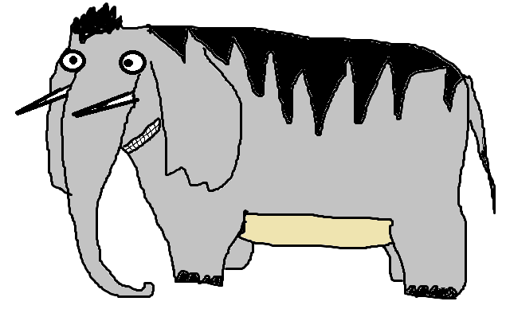

Слон редкий, полосатый.
Слон редкий, полосатый, кличка Балдахин.
Характер мягкий, добрый. Много лет содержался в клетке у иностранного торговца животнми Карбафоса;
Не выдержав побоев и бедствий, сбежал.
Долгое время скитался, и однажды, больной и голодный, пришел к нам.
Пограничники входили слона и подарили нашему зоопарку.
Очень любит рбий жир, при звуках флейты теряет волю.